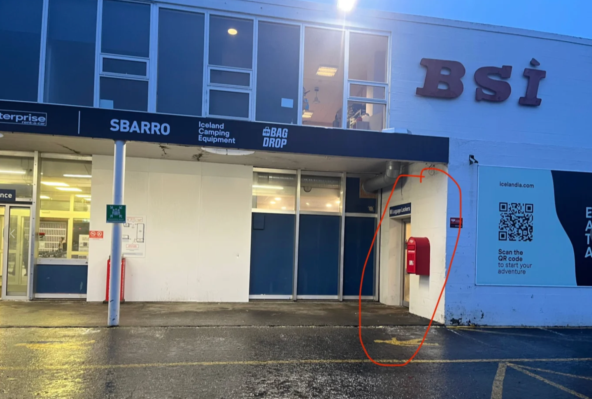
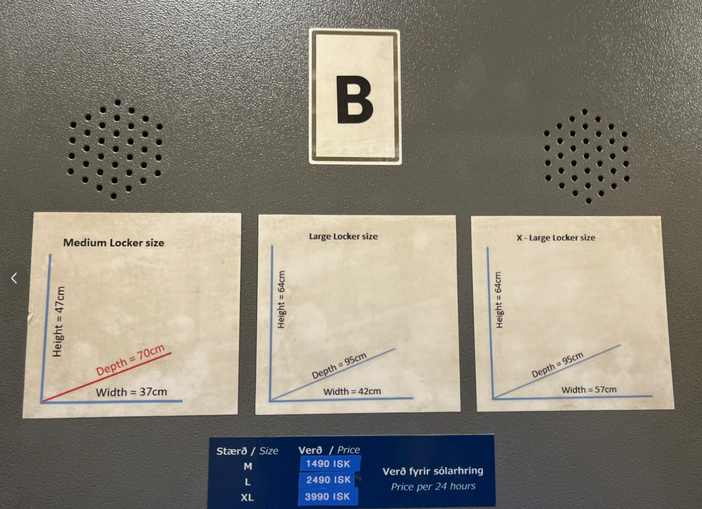

冰岛旅行攻略
本页为精简版，仅保留通用框架与要点。签证材料、每日行程、预算明细等完整内容请在小程序中查看。
第一部分：签证申请
基本原则：应向本次申根区行程中逗留时间最长的国家申请签证；如果多段行程同等长度，才申请第一个入境国的签证。冰岛一般 45 天出签，建议提前 3、4 个月申请。
申请材料清单（节选）
| 序号 | 材料名称 | 备注 |
|---|---|---|
| 1 | 申根签证个人申请表 | 在 VFS 官网下载填写。 |
| 2 | 护照原件及复印件 | 有效期需超过预计离开申根区日期 90 天。 |
| 3 | 白底证件照 | 2 张，近半年内拍摄。 |
| 4 | 银行流水 | 近 3–6 个月。 |
| 5 | 往返机票预订单 | 需覆盖整个行程。 |
其余材料与重点材料注意事项（财务证明、在职与收入证明、过境签核实等）已精简，完整版请在小程序中查看。
第二部分：出行前准备
- 通讯：按需购买欧洲电话卡。
- 衣物（三明治穿衣法：速干 + 抓绒 + 冲锋衣）：防风防水的外套与裤子、抓绒衣、速干衣、雪地靴或徒步鞋、防水手套、帽子、羊毛袜。
- 实用小物：欧洲转换插头、防滑鞋套（简易冰爪）、RFID 防盗卡膜、AirTag。
更完整的准备事项（机票与住宿预订、需打印的文件、转机液体规定等）已精简，完整版请在小程序中查看。
第三部分：行程安排
通用提示：冰岛酒店通常 15:00 后入住，11:00 前退房；导航推荐使用 Google Maps。
第一天：抵达雷克雅未克 & 市区漫步
市区主要景点集中，步行即可逛完，可自行安排顺序：
- 托宁湖 (Tjörnin)
- 哈帕音乐厅 (Harpa Concert Hall)
- 彩虹街 (Skólavörðustígur Rainbow Street)
- 哈尔格林姆斯大教堂 (Hallgrímskirkja)
第二天：出海观鲸 & 探索博物馆
观鲸团建议提前预订，港口在哈帕音乐厅附近。博物馆可自行选择：
- 熔岩秀 (Lava Show)
- 冰岛国家美术馆 (The National Gallery of Iceland)
- 维京传奇博物馆 (Saga Museum)
- 珍珠楼 (Perlan)
- 冰岛国家博物馆 (National Museum of Iceland)
- 冰岛飞越 (FlyOver Iceland)
第三至五天：南岸三日精华游（跟团）
参加旅行团是游览南岸的一种方式，省心省力，含 2 晚住宿与餐食，也能到达部分自驾不便前往的地点。
每日具体景点、游览顺序、住宿与餐饮等细节已精简，完整版请在小程序中查看。
第六天：市内体验 & 回程
上午寄存行李，可体验熔岩秀 (Lava Show)；晚上乘 Flybus 前往机场附近住宿，准备回程。
第四部分：预算参考
行程概览：总共 10 天，其中约 3.5 天在路上，6.5 天在冰岛。
固定支出明细
- 南岸三日游：xxxx
- 观鲸活动：xxxx
- 酒店住宿：xxxx
- 机票：xxxx
- 签证费用：xxxx
具体金额与餐饮参考已隐去，完整预算请在小程序中查看。
第五部分：实用信息
极光指南
极光预测方法与拍摄技巧已精简，完整版请在小程序中查看。
冰岛本地交通与寄存
电话打车
- 电话号码：
- 雷克雅未克地区：
+354 588 5522 - 凯夫拉维克机场地区：
+354 420 1212
- 雷克雅未克地区：
- 流程：打电话告知位置、目的地、人数和英文名，支持现金或信用卡支付。
- 价格：比较贵，7 分钟车程约 4600 冰岛克朗（约 247 元人民币）。
行李寄存（雷克雅未克）
- 位置：BSÍ Bus Terminal Reykjavík，在车站主楼右手边。
- 营业时间：24 小时，有监控，安全可靠。
- 价格参考：XL 尺寸的寄存柜 24 小时约 3990 ISK，可放下 26 寸行李箱 + 背包。


购物与退税、芬兰赫尔辛基转机攻略、语言交流等章节已精简，完整版请在小程序中查看。
祝您有一段难忘的冰岛之旅！